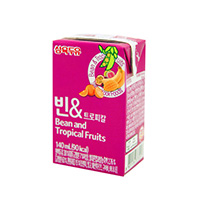
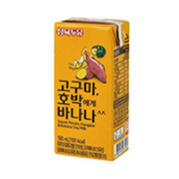
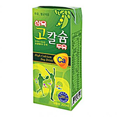
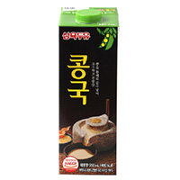

home>제품소개>기능성두유
기능성두유
- 빈&트로피칼
190ml
- 빈&트로피칼
- 두유의 영양에 열대과일의 비타민까지!
- 고구마, 호박에게 바나나
190ml
- 고구마, 호박에게 바나나
- 대두, 고구마 , 단호박 등 한국인에게 친근한 토속 원료 "옐로우 두유" 시대 개막!
- 삼육 고칼슘두유
190ml
- 삼육 고칼슘 두유
- 칼슘이 필요한 성장기 어린이와 성인들에게 꼭 필요한 삼육 고칼슘 두유
- 삼육두유 콩국
950ml
- 삼육 콩국
- 콩! 고유의 고소한 맛과 풍미가 살아있는 고단백, 저지방, 무향, 무색소, 무방부제 제품!